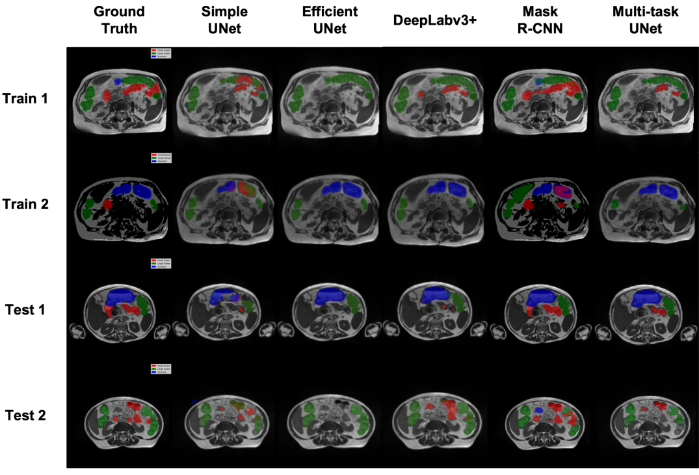

Tackling the NFL: Quantifying Defensive Metrics
Utilized NFL dataset of 10,000+ plays to predict the probability of defensive tackles, achieving AUC of 88% using Logistic Regression, CART, Random Forest, XGBoost, and Optimal Classification Trees
Context: 15.095 Machine Learning Under a Modern Optimization Lens at MIT
Team members: Krishanu Datta
Let Us Cook: LLM-based Recipe Generation
Fine-tuned LLMs (GPT, LLaMa 2, Gemma/LoRA) for recipe generation, highlighting variations in recipe quality due to model selection and prompt engineering
Context: 15.773 Hands-on Deep Learning at MIT
Team members: Iris Brook, Mackenzie Lees, Hayden Ratliff
Bop or Flop: Predicting Song Popularity on Spotify and Tiktok
Used sentiment analysis and topic modeling to predict song popularity on Spotify and TikTok, comparing XGBoost, Logistic Regression, CART, and Random Forest, achieving an AUC of 0.83.
Context: 15.072 Advanced Analytics Edge at MIT
Team members: Christian Ingersoll, Mackenzie Lees, Katherine Mendyk
